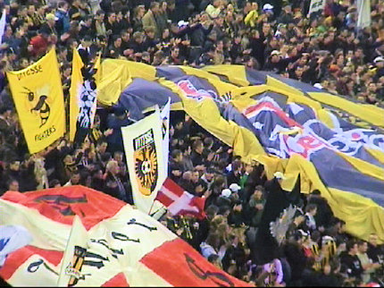
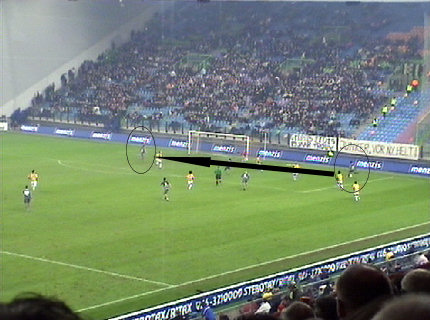
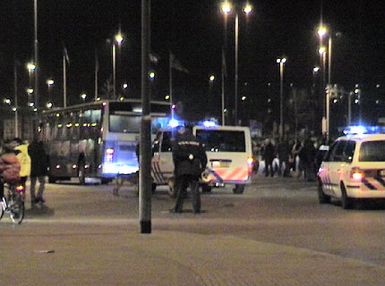

|
Vitesse - Roda JC (1-3) 3 maart 2006
|
Om elk risico op herhaling van het FC Utrecht-scenario te vermijden wordt
gekozen voor eigen vervoer.
Dit was wel even schrikken....!
De boodschap van het Fanproject komt goed over ondanks het vreselijke net.

Uitbundig vlagvertoon achter het doel en langs de lijn.

Vitesse is meest in balbezit en krijgt aardig wat scoringskansen maar hier
kapt Bodor zijn tegenstander uit om de bal daarna de zestien in te pompen.
Vrije trap van Vitesse door Fränkel die hoog over schiet.

Deze gaat in de muur. Het rendement van Vitesse is minimaal.
Uit een corner komt Vitesse op 1-0, (42'). Het doelpunt dat aanvankelijk
door debutant Blondelle werd geclaimd bleek een eigen goal van Senden.
En dan blijkt er opeens geluid in het Gelredome te zitten.
Terwijl Vicelich nog ter aarde ligt moeten Bodor en Kah tussenbeide komen
om Sergio en Knol (?) uit elkaar te houden.
Bij de vrije trap die Roda van de onverwacht correct fluitende Van Egmond
krijgt staat Wapenaar curieus zijn doel te verdedigen.
Cziommer gaat de vrije trap nemen.
De bal gaat er prachtig in: 1-1, (47'). Feest in de dug-out...
... en in het uitvak!
Het FP-doek is inmiddels naar beneden verplaatst.
Door een min of meer ongelukkige botsing tussen Kujovic en Fränkel (?)
raakt de keeper de bal kwijt...
... en gaat Fränkel (?) plat.
Veel kortstondige blessures deze wedstrijd.
Nadat Sergio namens Roda een buitenspeldoelpunt scoort is het hier de
beurt aan Vitesse.
;-)
Smerige overtreding van Blondelle op Vicelich welke de Belg op zijn eerste
gele kaart komt te staan.
Na een overtreding op Bodor krijgt Blondelle zijn tweede gele kaart en kan
derhalve inrukken met rood.
Uit een snel genomen vrije trap scoort Bodor aangestuurd door Sergio de
enigszins verwachte 1-2, (80'). (Foto: SV-online)
Nadat Cristiano in de 79e min. invalt voor Senden is het in de 89e min.
Sonko die Oper aflost. Hij mag meteen plaatsnemen in de muur want
Vitesse perst er een slotoffensief uit.
Na enkele gevaarlijke momenten waarin Roda slechts moeizaam overeind
blijft is het tijd om de 5 (!) minuten extra tijd te gebruiken om Sergio in te
wisselen voor Rudge.
In de hektische slotfase gaat Voigt onderuit.

Cziommer legt de bal pan-klaar voor Bodor die 1-3 intikt, (95').
De spelers bedanken de Rodasupporters. Er hangt een doek voor het Rode
Leger dat kennelijk bestaat uit Leemans en Lachambre.
De prijswinnaars van de mooiste sjaal.
Ook in Arnhem, veel hondenliefhebbers.
Vitesse-steward wil begroeting met Rodasupporters verhinderen.

Bus 1 vertrekt overigens al, onder vrij zware escorte.
Er was ook nog een dressuuroefening te bewonderen met twee knollen.
Door
deze overwinning wipt Roda na lange tijd weer over Vitesse heen en
staat het op een voorlopig 11e plaats. Hiermee is de laatste kans op
plaatsing voor de play-offs aangegrepen.
©
Koempels Pleasure Dome
|